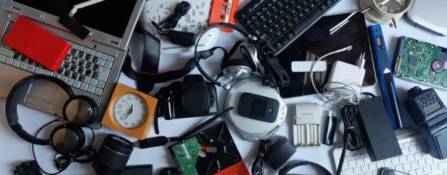
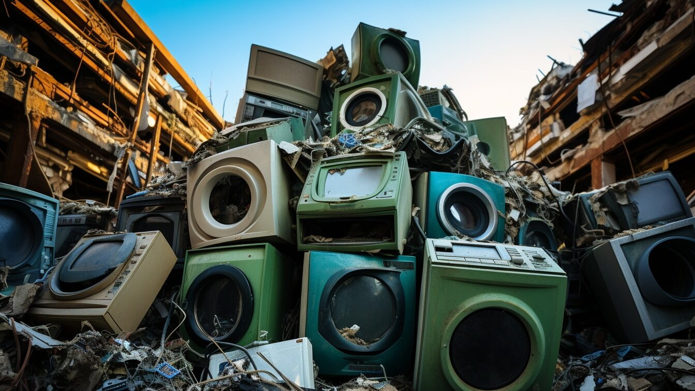
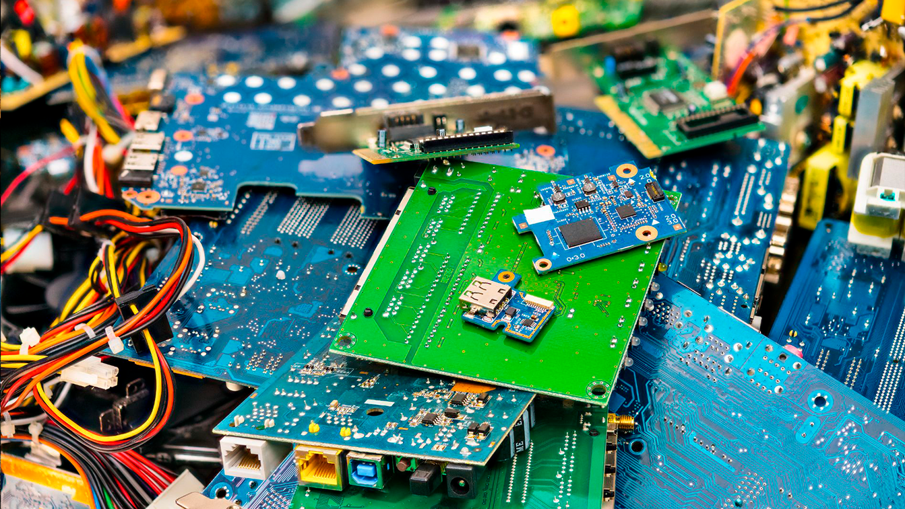

|  |
|---|
Molti componenti tecnologici sono difficili da smaltire perché contengono materiali diversi.
Questi rifiuti sono classificati come RAEE (Rifiuti da Apparecchiature Elettriche ed Elettroniche).
I RAEE vanno conferiti nelle isole ecologiche, centri di raccolta specializzati
Qui vengono separati e inviati agli impiandi di trattamento.
Riciclare i rifiuti elettronici è essenziale per ridurre l'impatto ambientale:
se non trattati correttamente, possono essere molto inquinanti.
Uno degli obiettivi del riciclo dei RAEE è recuperare le terre rare
dai dispositivi elettronici.
Questi elementi sono preziosi come la tecnologia moderna,
ma oggi vengono riciclati
solo in minima parte. La ricerca, però, sta migliorando i metodi di recupero.
L'abbigliamento ecologico non è più una scelta di nicchia,
ma una necessità per un futuro più sostenibile.
|  |  |
|---|
Esistono 5 diversi processi di riciclo, che variano in base al tipo di rifiuto.
Tuttavia, ci sono 4 passaggi fondamentali che li accomunano:
 |
 |
|---|